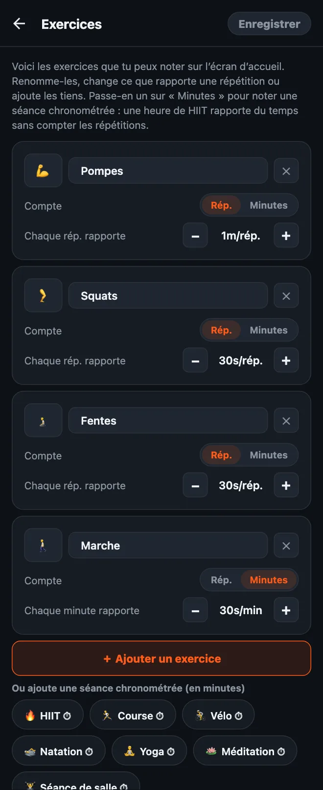

Comment personnaliser tes exercices dans HonorFit
Salut tout le monde ! Au départ, HonorFit, c’était mon bloqueur d’applis avec des pompes (en anglais) : Instagram reste verrouillé tant que je n’ai pas fait quelques pompes, et je les note moi-même, sur l’honneur (pas de caméra). L’appli démarre avec quatre exercices : pompes, abdos, tractions et squats.
Mais tout le monde n’a pas envie de faire des pompes. Peut-être que tes poignets les détestent, que tu préfères les burpees, ou que tu as déjà couru 8 km aujourd’hui et que tu veux que ça compte. Normal ! Du coup, tu peux tout changer. Voici exactement comment faire, et ce qui est gratuit ou réservé à Pro.
Ce qui est gratuit et ce qui est Pro
D’abord la bonne nouvelle : depuis la version 1.15.0, presque tout ce qui est dans cet article est gratuit. HonorFit a quatre exercices intégrés, avec ces valeurs :
| Exercice | Chaque rép. rapporte (par défaut) |
|---|---|
| 💪 Pompes | 1 minute |
| 🔥 Abdos | 30 secondes |
| 🧗 Tractions | 1 minute 30 secondes |
| 🦵 Squats | 30 secondes |
En gratuit, tu peux renommer, réordonner et supprimer des exercices, changer ce que rapporte chaque répétition, noter des séances chronométrées en minutes et ajouter jusqu’à 3 exercices perso. Les roues montent jusqu’à 100 par série, et tu peux mettre de côté jusqu’à 2 heures à la fois. Le blocage, le suivi et les stats sont gratuits pour toujours.
Pro coûte 3 $ par mois ou 19,99 $ en une fois. C’est le prix aux États-Unis : il varie selon le pays et la devise, et le store t’affiche le tien. Côté exercices, il te permet d’en ajouter autant que tu veux. Il supprime aussi la limite de 2 heures en banque et ajoute les routines enregistrées, la pause, le mode crédit et l’historique par mois et par an.
1. Ouvre l’éditeur d’exercices
- Sur l’écran d’accueil, touche la roue dentée en haut à droite pour ouvrir les Réglages.
- Touche la carte Exercices tout en haut.
Tu verras une carte par exercice. Rien de ce que tu fais ici ne s’applique tant que tu n’as pas touché Enregistrer en haut à droite, alors bidouille autant que tu veux. Si tu reviens en arrière sans enregistrer, rien ne change.

2. Renomme un exercice ou change son emoji
Touche le nom et tape ce que tu veux. « Pompes » peut devenir « Pompes sur les genoux » ou « Pompes au mur » si c’est ce que tu fais vraiment. Pour changer l’icône, touche le carré de l’emoji à gauche et choisis-en un dans la grille (il y en a une quarantaine, plutôt sportifs).
Petit détail : les noms intégrés suivent la langue de l’appli, donc « Pompes » s’affiche « Pushups » si ton téléphone est en anglais. Dès que tu en renommes un, il affiche exactement ce que tu as tapé.
3. Choisis le temps d’écran que rapporte chaque répétition
Sous chaque exercice, il y a Chaque rép. rapporte avec un bouton − et un bouton +. Chaque appui change la valeur de 5 secondes, et le minimum est de 5 secondes. Tu peux donc faire valoir les burpees 1m30s et les jumping jacks 10s, ce qui te paraît juste.
Tu peux aussi changer seulement les valeurs sans ouvrir l’éditeur : dans les Réglages, la section Valeur des répétitions, juste sous la carte Exercices, a les mêmes boutons −/+.
4. Ajoute un exercice
Deux façons :
- Touche « ＋ Ajouter un exercice ». Tu obtiens une nouvelle carte « Nouvel exercice » qui vaut 30 secondes par répétition. Renomme-la et règle la valeur.
- Touche une suggestion. Sous le bouton, il y a une rangée d’exercices courants à ajouter d’un geste : Burpees, Fentes, Jumping jacks, Gainage, Mountain climbers, Dips, Corde à sauter, Montées de genoux, Curls biceps, Swings kettlebell, Chaise, Russian twists, Ponts fessiers et Kegels. Eux aussi démarrent à 30 secondes par répétition. Une fois ajouté, un exercice disparaît des suggestions.
En gratuit, tu peux avoir jusqu’à 3 exercices perso à la fois (les exercices intégrés renommés ne comptent pas). Avec Pro, c’est illimité.
Chaque exercice a sa propre roue sur l’écran d’accueil, donc je te conseille d’en garder environ quatre. Au-delà, tu passes ton temps à faire défiler pour trouver le bon.
5. Note des séances chronométrées (en minutes plutôt qu’en répétitions)
C’est la question qu’on me pose le plus. Certains sports ne se comptent tout simplement pas en répétitions : une marche, un cours de yoga, un footing, une heure à la salle. Chaque carte a un interrupteur Compte : Rép. | Minutes. Passe-le sur Minutes et la roue compte des minutes, et la valeur devient Chaque minute rapporte.
Il y a aussi des suggestions chronométrées à ajouter d’un geste (elles affichent un ⏱) : HIIT, Course, Vélo, Natation, Yoga, Pilates, Méditation, Séance de salle et Marche.
Les nouvelles séances chronométrées démarrent à 30 secondes par minute, donc une heure de HIIT rapporte 30 minutes d’appli. Attention : quand tu fais passer un exercice de Rép. à Minutes (ou l’inverse), sa valeur revient à 30 secondes, parce que « 1 minute par répétition » et « 1 minute par minute », ce n’est pas du tout le même deal. Règle-la de nouveau après le changement.
La roue compte des minutes entières, donc 30 secondes de gainage ne rentrent pas vraiment en Minutes. Pour les exercices statiques comme ça, je laisserais sur Rép. et je déciderais ce qu’est une répétition pour toi (par exemple, un maintien de 20 secondes).
6. Supprime un exercice, ou repars de zéro
- Touche le ✕ sur une carte pour supprimer cet exercice. Il faut toujours en garder au moins un.
- Rétablir par défaut, tout en bas, remet les quatre exercices d’origine avec leurs valeurs d’origine. Comme tout le reste ici, ça ne s’applique qu’une fois que tu as touché Enregistrer.
Comment je choisirais les valeurs
La valeur, c’est le prix de tes applis. Le but, c’est un prix que tu vas vraiment payer au lieu de tricher. Quelques points de départ :
- Les mouvements plus durs rapportent plus. Tractions et burpees à 1m30s, pompes à 1m, squats et fentes à 30s.
- Les séances chronométrées à environ la moitié. 30 secondes par minute, ça veut dire qu’une marche de 20 minutes t’offre 10 minutes de scroll. Si la marche est l’habitude que tu veux le plus prendre, monte-la à 1 minute par minute.
- Si tu te surprends à arrondir à la hausse, baisse le prix. C’est ma règle avec le système de l’honneur. Noter des répétitions que tu n’as pas faites, ça veut dire que le prix est mal réglé, pas que tu es nul.
- Le mode difficile (gratuit) divise toutes les valeurs par deux avec un seul bouton en haut de l’écran d’accueil, si tu veux une journée plus corsée sans tout modifier.
Si tu veux des idées de configurations précises, j’ai écrit deux autres articles : le Kegel et le pont fessier comme exercices pour débloquer ton téléphone, et des exercices doux pour quand les pompes, ce n’est pas ton truc.
HonorFit Blocker est un bloqueur d’applis gratuit sur iPhone et Android. Système de l’honneur, pas de caméra, rien ne quitte ton téléphone. Jusqu’à 3 exercices perso et les séances chronométrées sont gratuits ; Pro les rend illimités. Ce n’est pas pour tout le monde, mais peut-être que certains d’entre vous vont l’apprécier !